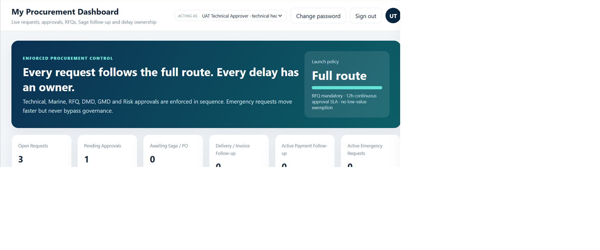

Teacher and school workspace
Edu Suite 2.0
AI-assisted lesson notes, reports, schemes of work, assessments, diagrams, teaching visuals, and multiple lesson formats, with teacher review remaining essential.
Explore Edu Suite ->JENECONK product ecosystem
Each JENECONK product addresses a defined education, business, training, or operational need. Explore the local overview first to understand who it is for, what it does, and what to expect.

Education products
These products serve different parts of the learning journey. Edu Suite supports teachers and schools; JEMS supports structured English mastery and IELTS Academic preparation.
AI-assisted lesson notes, reports, schemes of work, assessments, diagrams, teaching visuals, and multiple lesson formats, with teacher review remaining essential.
Explore Edu Suite ->
Diagnostics, targeted practice, progress tracking, and human feedback for learners preparing through a structured English pathway.
Explore JEMS ->Business products
Business Suite supports professional document work. Smart Procurement supports controlled procurement workflows for organisations with defined approval routes.

Guided workflows for CVs, proposals, official letters, certificates, reports, and other polished professional documents.
Explore Business Suite ->
Track request ownership, stage age, approvals, RFQs, delivery, invoice follow-up, and procurement history. Access is for authorised client and UAT users.
Explore Smart Procurement ->Training Academy
JENECONK AI Academy provides instructor-led learning for children, students, administrators, professionals, schools, and organisations. Training areas include AI productivity, automation, coding, cybersecurity, data analysis, Excel, and digital skills.

Institutional service
JENECONK provides scoped computer-based testing setup for schools, training centres, recruitment exercises, and institutional assessments. Requirements, delivery mode, candidate volume, and support are agreed before deployment.
CBT Setup Enquiry